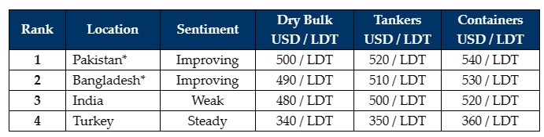

GMS Week 03 – 2024, SSORP, & SHIP RECYCLING!
in Weekly Demolition Reports 22/01/2024

With 2024 well underway and HKC sales having taken center stage of late, GMSremains delighted to remind our readers that its Sustainable Ship & Offshore Recycling Program (SSORP) continues to surpass all of the stipulations & requirements for the environmentally safe and responsible recycling of ships that are currently set by the Hong Kong Convention (HKC). Significantly, SSORP has become a guardian that ensures compliance monitoring and auditing initiatives, a process that has been rigorously verified & endorsed by Lloyd’s Register Quality Assurance (LRQA). As adherence to safety and environmental standards becomes increasingly vital – ship owners, ship recycling facilities, and a growing number of maritime stakeholders are increasingly leveraging the strengths of SSORP, underscoring their own collective allegiances to sustainability.
In a testament to this fact, since inception, SSORP has not only completed the successful recycling supervision & compliance monitoring of over 120 ships & offshore assets, over the years, SSORP has also become the only choice for a growing number of prestigious maritime companies as over 30 ship & offshore owners have nominated SSORP as their only compliance monitoring partner. SSORP is also the only program to estimate the carbon footprint of ship recycling and with SSORP at the helm, your company’s ESG requirements are adeptly realized & aligned with your recycling needs, meeting the highest standards of environmentally safe recycling for your vessels.
For a complete overview of SSORP, we welcome you to a three-minute video that explains the essence, rationale, and operational aspects of GMS’s Sustainable Ship and Offshore Recycling Program at https://www.youtube.com/watch?v=zcVW8vI53pE. For further information, we also invite you to contact Dr. Anand Hiremath directly at anand@ssorp.net.
On the Ship Recycling front this week, even as vessel prices improved from the lows seen towards the end of 2023 and plate prices made a massive jump in Bangladesh over the last couple of weeks, only a trickle of sales have been confirmed into the recycling markets in 2024 thus far. There also seems a reluctance from ship owners to bite at current offers in the low USD 500s/LDT, having seen levels around USD 100/LDT higher only a couple of quarters ago. Mercifully, L/C restrictions have been easing in Pakistan & Bangladesh and as a result, a noticeable interest to buy has been emerging from both markets. India on the other hand continues to suffer with steel price declines that are leaving end buyers scratching their heads over whether they can (or even should) compete with their strengthening neighbors. Lastly, Turkey on the far end remains as invisible as ever.
For week 3 of 2024, GMS demo rankings / pricing for the week are as below.

📄 Download PDF: Ship-recycling-market-insight-week-03-2024-2024-SSORP-And-Ship-Recycling.pdf
Source: GMS,Inc. , https://www.gmsinc.net/gms_new/index.php/web
 Translate
Translate{kind=link}